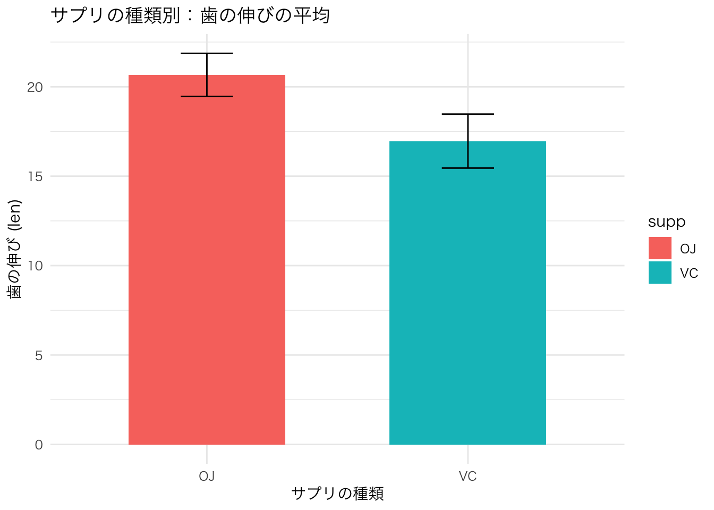
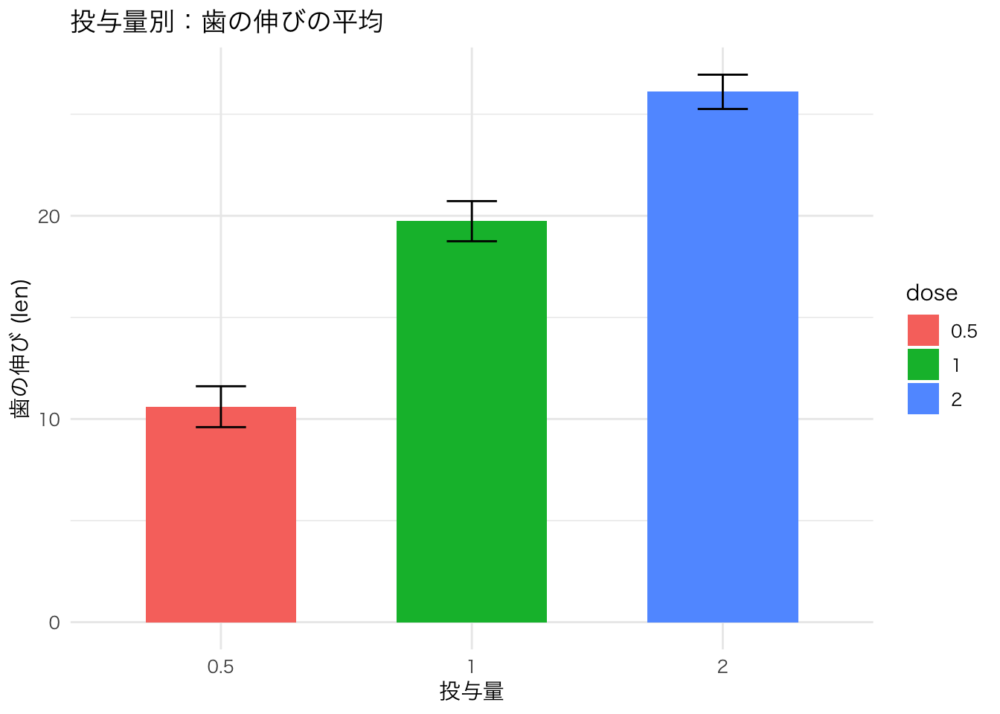
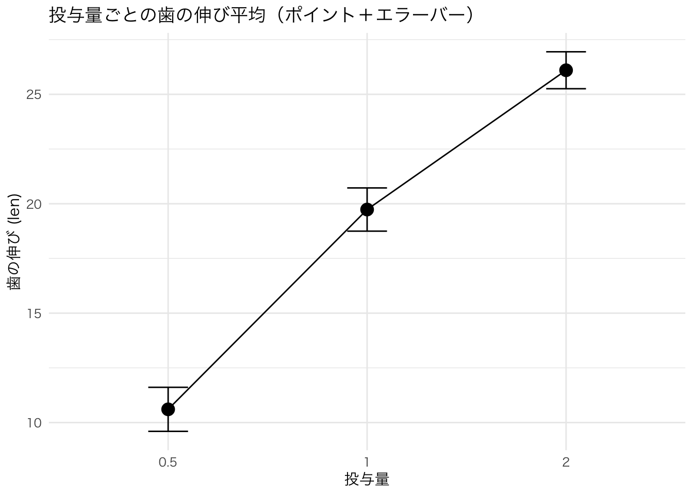
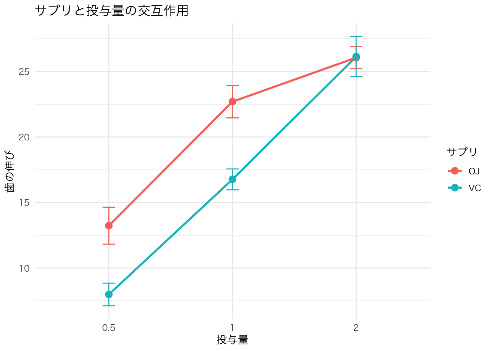

len supp dose
Min. : 4.20 OJ:30 Min. :0.500
1st Qu.:13.07 VC:30 1st Qu.:0.500
Median :19.25 Median :1.000
Mean :18.81 Mean :1.167
3rd Qu.:25.27 3rd Qu.:2.000
Max. :33.90 Max. :2.000 分散分析 第2回：二元配置分散分析
R
二元配置分散分析
今回は二元配置の分散分析をやっていきます。 「そもそも二元配置ってなによ」ってことから見ていきましょうか。
早速今回使用するデータを確認します。
サンプルデータ
今回使用するデータはToothGrowthです。 何度かこのブログでは紹介していますが、念の為データを確認していきましょう。
len: 歯の伸びた長さ(数値)supp: 接種したサプリの種類(ラベル)dose: 投与量(数値)
分析計画
このデータを分散分析をしていきます。 独立変数は、supp と dose で 充足変数が、lenです。
二元配置分散分析では、主効果と交互作用があります。
主効果とは？
主効果（Main effect）とは、ある1つの独立変数が目的変数（従属変数）に与える影響のことを指します。
この分析では、2つの主効果を検定します：
supp（サプリの種類）が 歯の伸び（len）に与える効果dose（投与量）が 歯の伸びに与える効果
それぞれが 他の因子に関係なく、単独で平均値に差をもたらしているかどうかを確認します。
交互作用とは？
交互作用（Interaction effect）とは、2つの独立変数が組み合わさったときに発生する相乗的な影響のことです。
たとえば：
suppの効果が 投与量（dose）の値によって変わる- または
doseの効果が サプリの種類（supp）によって変わる
このように、一方の因子の効果が、もう一方の因子の水準によって変化するとき、交互作用があるといいます。
交互作用が有意であれば、「主効果だけを見る」だけでは不十分で、2つの因子の組み合わせで結果が変わってくることを意味します。
なぜ主効果と交互作用を分けて考えるのか？
分散分析では、以下の3つを個別に評価します：
suppの主効果doseの主効果supp × doseの交互作用
この3つを分けて見ることで、「それぞれの因子がどのように効いているか」「組み合わせが重要なのか」が明確になります。
分析
実際に分析を進めていきましょう。
前処理
二元配置の分散分析ができるように、doseをカテゴリに変更してみましょう。 数値データをカテゴリに変更する 方法はいろいろあると思います。 等間隔で切ったり、四分位を使ったりなどです。 今回のToothGrowth は実はデータが3つしかありません。
なので、数値データをカテゴリデータに変更します。 下記コードでRの中でのdose の認識を数値からカテゴリに変更できます。
len supp dose
Min. : 4.20 OJ:30 0.5:20
1st Qu.:13.07 VC:30 1 :20
Median :19.25 2 :20
Mean :18.81
3rd Qu.:25.27
Max. :33.90 数値からカテゴリに変更したので、summaryの表示で平均値などではなく各カテゴリでの個数が表示されるようになっています。
正規性と等分散性の確認
今回は二元配置分散分析の練習なので、正規性と等分散性の検定はサクッとです。
Warning: パッケージ 'dplyr' はバージョン 4.2.3 の R の下で造られました
次のパッケージを付け加えます: 'dplyr' 以下のオブジェクトは 'package:stats' からマスクされています:
filter, lag 以下のオブジェクトは 'package:base' からマスクされています:
intersect, setdiff, setequal, union`summarise()` has grouped output by 'supp'. You can override using the
`.groups` argument.# A tibble: 6 × 3
# Groups: supp [2]
supp dose p_value
<fct> <fct> <dbl>
1 OJ 0.5 0.182
2 OJ 1 0.415
3 OJ 2 0.815
4 VC 0.5 0.170
5 VC 1 0.270
6 VC 2 0.919ToothGrowth$group <- interaction(ToothGrowth$supp, ToothGrowth$dose)
bartlett.test(len ~ group, data = ToothGrowth)
Bartlett test of homogeneity of variances
data: len by group
Bartlett's K-squared = 6.9273, df = 5, p-value = 0.2261正規性も等分散性も問題がなさそうです。
二元配置分散分析
データの整形が完了したので、実際の分析に移ってみましょう。
Df Sum Sq Mean Sq F value Pr(>F)
supp 1 205.4 205.4 15.572 0.000231 ***
dose 2 2426.4 1213.2 92.000 < 2e-16 ***
supp:dose 2 108.3 54.2 4.107 0.021860 *
Residuals 54 712.1 13.2
---
Signif. codes: 0 '***' 0.001 '**' 0.01 '*' 0.05 '.' 0.1 ' ' 1無事結果が表示されたので、出力結果を読み解いていきましょう。
Df Sum Sq Mean Sq F value Pr(>F)Df: 自由度（Degrees of Freedom）Sum Sq: 平方和（Sum of Squares）Mean Sq: 平均平方（Sum Sq ÷ Df）F value: F統計量（群間の変動 ÷ 群内の変動）Pr(>F): p値（有意確率）
supp 1 205.4 205.4 15.572 0.000231 ***supp: サプリの種類（VC or OJ）による主効果の検定をしていることを示しています。Df = 1: サプリは2水準（VCとOJ）なので自由度は1です。Sum Sq = 205.4: サプリによるばらつきの平方和Mean Sq = 205.4: 自由度1なので平方平均も同じF value = 15.572: 群間変動（サプリの効果）が群内変動に比べて約15.6倍大きいPr(>F) = 0.000231: p < 0.001なので非常に有意（***）
dose 2 2426.4 1213.2 92.000 < 2e-16 ***dose: 投与量（0.5, 1, 2）による主効果の検定Df = 2: 3水準 → 自由度2Sum Sq = 2426.4: 投与量によるばらつきの平方和Mean Sq = 1213.2: 2426.4 ÷ 2F value = 92.000: 群間変動が群内変動に比べて92倍も大きいPr(>F) < 2e-16: 極めて小さいp値（***）
supp:dose 2 108.3 54.2 4.108 0.021860 *supp:dose: サプリと投与量の交互作用効果の検定Df = 2: 組み合わせの自由度2Sum Sq = 108.3: 交互作用によるばらつきの平方和Mean Sq = 54.2: 108.3 ÷ 2F value = 4.108: 交互作用効果の大きさ（群間 vs 群内変動比）Pr(>F) = 0.021860: p < 0.05なので有意（*）
Residuals 54 712.1 13.2Residuals: 誤差（説明できなかったばらつき）Df = 54: 総サンプル数（60）− 各効果の自由度合計（1+2+2）Sum Sq = 712.1: 誤差平方和Mean Sq = 13.2: 誤差平方平均
この結果をまとめると
suppに有意に効果あり → サプリの種類の主効果doseに有意に効果あり → 投与量の主効果supp&doseに有意に効果あり → 交互作用
サプリの種類（supp）、投与量（dose）ともに歯の伸びに有意な影響を与えることが分かりました。
また、サプリと投与量の間にも有意な交互作用が見られたため、単純な主効果だけでなく、「どのサプリをどの投与量で使用するか」という組み合わせによって結果が変わることが示唆されました。
多重比較
分散分析で有意差がありましたので、多重比較を行いましょう。 多重比較は、一元配置分散分析でも使用した TukeyのHSD検定 です。
# 分散分析モデル（すでに作成済みのためコメントアウト）
# model <- aov(len ~ supp * dose, data = ToothGrowth)
# TukeyHSDによる多重比較
tukey_result <- TukeyHSD(model)
# 結果の表示
tukey_result Tukey multiple comparisons of means
95% family-wise confidence level
Fit: aov(formula = len ~ supp * dose, data = ToothGrowth)
$supp
diff lwr upr p adj
VC-OJ -3.7 -5.579828 -1.820172 0.0002312
$dose
diff lwr upr p adj
1-0.5 9.130 6.362488 11.897512 0.0e+00
2-0.5 15.495 12.727488 18.262512 0.0e+00
2-1 6.365 3.597488 9.132512 2.7e-06
$`supp:dose`
diff lwr upr p adj
VC:0.5-OJ:0.5 -5.25 -10.048124 -0.4518762 0.0242521
OJ:1-OJ:0.5 9.47 4.671876 14.2681238 0.0000046
VC:1-OJ:0.5 3.54 -1.258124 8.3381238 0.2640208
OJ:2-OJ:0.5 12.83 8.031876 17.6281238 0.0000000
VC:2-OJ:0.5 12.91 8.111876 17.7081238 0.0000000
OJ:1-VC:0.5 14.72 9.921876 19.5181238 0.0000000
VC:1-VC:0.5 8.79 3.991876 13.5881238 0.0000210
OJ:2-VC:0.5 18.08 13.281876 22.8781238 0.0000000
VC:2-VC:0.5 18.16 13.361876 22.9581238 0.0000000
VC:1-OJ:1 -5.93 -10.728124 -1.1318762 0.0073930
OJ:2-OJ:1 3.36 -1.438124 8.1581238 0.3187361
VC:2-OJ:1 3.44 -1.358124 8.2381238 0.2936430
OJ:2-VC:1 9.29 4.491876 14.0881238 0.0000069
VC:2-VC:1 9.37 4.571876 14.1681238 0.0000058
VC:2-OJ:2 0.08 -4.718124 4.8781238 1.0000000いつも通り結果を細かくみていきましょう。
Tukey multiple comparisons of means
95% family-wise confidence level- TukeyのHSD（Honestly Significant Difference）検定で、多群間のペアを比較を実施
- 全体の誤差率（family-wise error rate）を5%以内にコントロールした多重比較を実施
Fit: aov(formula = len ~ supp * dose, data = ToothGrowth)- 分析に使用したモデルを記載してくれています。
$supp
diff lwr upr p adj
VC-OJ -3.7 -5.579828 -1.820172 0.0002312ここでは、supp(サプリ)での主効果を検定しています。 $suppがsuppの主効果を確認していることを示しています。
そして、それ以下の項目は下記の通りです。
diff: 「最初の群 − 次の群」の平均差。正なら最初が大きい、負なら小さい。lwr: その差の推定値の信頼できる範囲(95%信頼区間)の下側upr: その差の推定値の信頼できる範囲(95%信頼区間)の上側p adj: 多重比較補正後のp値（通常のp値より厳しくなっている）
このことから、今回の結果は「OJの方がVCより歯が伸びる効果が有意に高い」と言えます。
$dose
diff lwr upr p adj
1-0.5 9.130 6.362488 11.897512 0.0e+00
2-0.5 15.495 12.727488 18.262512 0.0e+00
2-1 6.365 3.597488 9.132512 2.7e-06次はdose(摂取量)の主効果を調べています。 doseは３要因なので、１ついずつ比較して３パターンあり、それぞれを比較しています。 全ての比較で有意差があり、0.5 < 1.0 < 2 という関係になっています。
$`supp:dose`
diff lwr upr p adj
VC:0.5-OJ:0.5 -5.25 -10.048124 -0.4518762 0.0242521
OJ:1-OJ:0.5 9.47 4.671876 14.2681238 0.0000046
VC:1-OJ:0.5 3.54 -1.258124 8.3381238 0.2640208
OJ:2-OJ:0.5 12.83 8.031876 17.6281238 0.0000000
VC:2-OJ:0.5 12.91 8.111876 17.7081238 0.0000000
OJ:1-VC:0.5 14.72 9.921876 19.5181238 0.0000000
VC:1-VC:0.5 8.79 3.991876 13.5881238 0.0000210
OJ:2-VC:0.5 18.08 13.281876 22.8781238 0.0000000
VC:2-VC:0.5 18.16 13.361876 22.9581238 0.0000000
VC:1-OJ:1 -5.93 -10.728124 -1.1318762 0.0073930
OJ:2-OJ:1 3.36 -1.438124 8.1581238 0.3187361
VC:2-OJ:1 3.44 -1.358124 8.2381238 0.2936430
OJ:2-VC:1 9.29 4.491876 14.0881238 0.0000069
VC:2-VC:1 9.37 4.571876 14.1681238 0.0000058
VC:2-OJ:2 0.08 -4.718124 4.8781238 1.0000000最後にsupp:dose の交互作用の検定結果です。suppが２要因で、doseが３要因なので2×3で6パターンの組み合わせがあります。その中から2つを選び比較していくので、「順番を考慮しない2つの選び方」の計算になります。 6C2=15通りになります。
結果は下記の通りです。
| 比較 | 差 (diff) | p値 (p adj) | 有意差の有無 |
|---|---|---|---|
| VC:0.5 - OJ:0.5 | -5.25 | 0.0242521 | 有意 |
| OJ:1 - OJ:0.5 | 9.47 | 0.0000046 | 有意 |
| VC:1 - OJ:0.5 | 3.54 | 0.2640208 | 有意差なし |
| OJ:2 - OJ:0.5 | 12.83 | 0.0000000 | 有意 |
| VC:2 - OJ:0.5 | 12.91 | 0.0000000 | 有意 |
| OJ:1 - VC:0.5 | 14.72 | 0.0000000 | 有意 |
| VC:1 - VC:0.5 | 8.79 | 0.0000210 | 有意 |
| OJ:2 - VC:0.5 | 18.08 | 0.0000000 | 有意 |
| VC:2 - VC:0.5 | 18.16 | 0.0000000 | 有意 |
| VC:1 - OJ:1 | -5.93 | 0.0073930 | 有意 |
| OJ:2 - OJ:1 | 3.36 | 0.3187361 | 有意差なし |
| VC:2 - OJ:1 | 3.44 | 0.2936430 | 有意差なし |
| OJ:2 - VC:1 | 9.29 | 0.0000069 | 有意 |
| VC:2 - VC:1 | 9.37 | 0.0000058 | 有意 |
| VC:2 - OJ:2 | 0.08 | 1.0000000 | 有意差なし |
結果が多くて大変ですが、頑張って細かくみるしかないですね。
私なりに結果をまとめてみると下記の通りです。
- サプリの種類（supp）だけでも有意差あり（OJ > VC）
- 投与量（dose）は増えるほど効果あり（すべてのペアで有意）
- 交互作用（supp:dose）では、特定の組み合わせで効果が異なる
- 特に低投与量（0.5）ではOJが優勢
- 高投与量（2.0）ではVCとOJの差がほぼない
図の作成
主効果
まずは主効果を見るための図を作成してみましょう。 平均＋標準誤差バーの棒グラフを作成してみます。
library(ggplot2)
# supp（サプリ）の主効果
ggplot(ToothGrowth, aes(x = supp, y = len, fill = supp)) +
stat_summary(fun = mean, geom = "bar", width = 0.6) + # 平均値の棒グラフ
stat_summary(fun.data = mean_se, geom = "errorbar", width = 0.2) + # 標準誤差バー
theme_minimal(base_family = "Hiragino Sans") +
labs(title = "サプリの種類別：歯の伸びの平均",
x = "サプリの種類",
y = "歯の伸び (len)")
# dose（投与量）の主効果
ggplot(ToothGrowth, aes(x = dose, y = len, fill = dose)) +
stat_summary(fun = mean, geom = "bar", width = 0.6) +
stat_summary(fun.data = mean_se, geom = "errorbar", width = 0.2) +
theme_minimal(base_family = "Hiragino Sans") +
labs(title = "投与量別：歯の伸びの平均",
x = "投与量",
y = "歯の伸び (len)")
今回は棒グラフ以外も作成してみます。 平均を点で示し、標準誤差をバーで表示します。
# dose別に点＋線で描く
ggplot(ToothGrowth, aes(x = dose, y = len, group = 1)) +
stat_summary(fun = mean, geom = "point", size = 4) +
stat_summary(fun = mean, geom = "line") +
stat_summary(fun.data = mean_se, geom = "errorbar", width = 0.2) +
theme_minimal(base_family = "Hiragino Sans") +
labs(title = "投与量ごとの歯の伸び平均（ポイント＋エラーバー）",
x = "投与量",
y = "歯の伸び (len)")
交互作用
交互作用を可視化する図としては、交互作用プロットを使用することが多いようです。
ggplot(ToothGrowth, aes(x = dose, y = len, color = supp, group = supp)) +
stat_summary(fun = mean, geom = "line", size = 1) +
stat_summary(fun = mean, geom = "point", size = 3) +
stat_summary(fun.data = mean_se, geom = "errorbar", width = 0.1) +
theme_minimal(base_family = "Hiragino Sans") +
labs(title = "サプリと投与量の交互作用",
x = "投与量",
y = "歯の伸び",
color = "サプリ")Warning: Using `size` aesthetic for lines was deprecated in ggplot2 3.4.0.
ℹ Please use `linewidth` instead.
見方としては、
- 2本の線（VCとOJ）が描かれます
- 線が交差または離れているほど、交互作用がある
- 線がほぼ平行なら、交互作用は弱い（またはなし）
という感じです。
本日は二元配置分散分析でした。
次は繰り返しのあるものですね。ではまた次回。